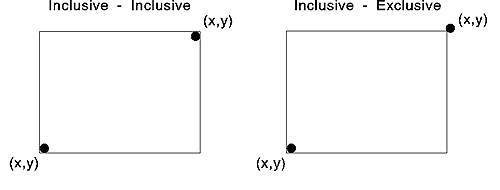

The PM programming interface assembles the application's graphics output in a process that can use up to five coordinate spaces, known collectively as the viewing pipeline. Clipping can occur at each stage in the viewing pipeline. Objects in world coordinate, model, page, or device space can be clipped. When an application defines clipping areas in several coordinate spaces, the final result is similar to combining all the areas into a single clipping area. This single area is defined by the intersection of the areas in each coordinate space.
Clipping in different coordinate spaces, however, is a means of conceptualizing the process to aid in its understanding. Clipping, like transformations, actually happens in one operation, with all the different types of clipping being performed on all primitives in the device space at once.
The following table describes the different types of clipping areas associated with the different coordinate spaces.
Clipping Areas and Coordinate Space Summary
┌────────────────┬────────────────┬────────────────────────────┐ │Clipping Area │Coordinate Space│Description │ ├────────────────┼────────────────┼────────────────────────────┤ │Clip path │World space │Always inclusive/inclusive │ │ │ │ │ │ │ │Clipping area can have │ │ │ │curved edges │ │ │ │ │ │ │ │Clipping area can be │ │ │ │rotated. │ ├────────────────┼────────────────┼────────────────────────────┤ │Viewing limit │Model space │Always a rectangular │ │ │ │clipping boundary │ │ │ │ │ │ │ │Always inclusive/inclusive │ │ │ │ │ │ │ │Rotating clipping area │ │ │ │results in larger rectangle.│ ├────────────────┼────────────────┼────────────────────────────┤ │Graphics field │Page space │Always a rectangular │ │ │ │clipping boundary │ │ │ │ │ │ │ │Always inclusive/inclusive │ │ │ │ │ │ │ │Rotating clipping area │ │ │ │impossible. Cannot specify a│ │ │ │device transform with │ │ │ │rotation. │ ├────────────────┼────────────────┼────────────────────────────┤ │Clip region │Device space │Can be a single rectangle or│ │ │ │multiple rectangles that │ │ │ │overlap or remain separate │ │ │ │ │ │ │ │Always inclusive/exclusive │ │ │ │ │ │ │ │Rotating the clipping area │ │ │ │is impossible. │ └────────────────┴────────────────┴────────────────────────────┘
Note: Inclusive/inclusive means that the operating system includes the bottom and leftmost edges of the rectangle in the clipping area as well as the top and rightmost edges. Inclusive/exclusive means that the operating system includes the bottom and leftmost edges but excludes the top and rightmost edges.
The following figure illustrates the differences between inclusive-inclusive and inclusive-exclusive clipping.

Inclusive/Inclusive and Inclusive/Exclusive Clipping